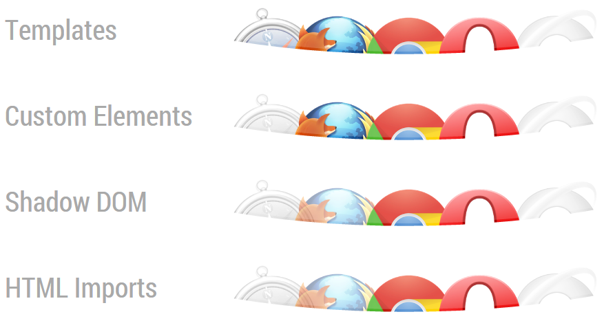

+
+ 
Polymer.dart
The future of web development
+NicolasFrancois / @nicofrancois
+GuillaumeGirou / @GirouGuillaume
Web components

Custom Element
Template
Shadow Dom
Html Import
Vanilla JS Web Component
<template>
<p>Hello World!</p>
</template>
<script>(function() {
var thisDoc = document.currentScript.ownerDocument;
var element = Object.create(HTMLElement.prototype);
element.createdCallback = function() {
var template = thisDoc.querySelector('template').content;
var clone = document.importNode(template, true);
this.createShadowRoot().appendChild(clone);
};
document.registerElement('hello-world', { prototype: element });
})();</script>
Vanilla JS Web Component
<html>
<head>
<link rel="import" href="hello-world.html">
</head>
<body>
<hello-world></hello-world>
</body>
</html>
Polymer
Polyfills


Sugaring
TODO: ImagePolymer's material design elements
First Custom Element
Register custom element
<polymer-element name="hello-world">
<template>
<p>Hello {{name}}!</p>
</template>
<script>
Polymer({
name: 'World'
});
</script>
</polymer-element>
Dart
First Custom Element
Register custom element
<!-- import polymer-element's definition -->
<link rel="import" href="../../packages/polymer/polymer.html">
<polymer-element name="hello-world" noscript>
<template>
<p>Hello World!</p>
</template>
</polymer-element>
Use custom element
<html>
<head>
<!-- import the hello-world -->
<link rel="import" href="packages/dart/hello_world.html">
</head>
<body>
<!-- use hello-world element -->
<hello-world></hello-world>
<!-- bootstrap polymer -->
<script type="application/dart">export 'package:polymer/init.dart';</script>
</body>
</html>
Bindings
Data binding
<link rel="import" href="../../packages/polymer/polymer.html">
<polymer-element name="hello-world">
<template>
<label>What is your name?</label>
<input type="input" value="{{yourName}}">
<p>Hello {{yourName}}!</p>
</template>
<script type="application/dart" src="hello_world.dart"></script>
</polymer-element>
Data binding
import 'package:polymer/polymer.dart';
@CustomTag('hello-world')
class HelloWorld extends PolymerElement {
@observable String yourName;
HelloWorld.created() : super.created();
}
Custom attribute
import 'package:polymer/polymer.dart';
@CustomTag('hello-world')
class HelloWorld extends PolymerElement {
@published String yourName;
HelloWorld.created() : super.created();
}
<hello-world yourName="John"></hello-world>
Conditional template
<template if="{{number % 2 == 0}}">{{number}} is even</template>
<template if="{{number % 2 != 0}}">{{number}} is odd</template>
@CustomTag('even-or-odd')
class EvenOrOdd extends PolymerElement {
@observable int number = 0;
// ...
}
Loop template
<ul>
<template repeat="{{friend in friends}}">
<li>Hello {{friend}}!</li>
</template>
</ul>
@CustomTag('hello-friends')
class HelloFriends extends PolymerElement {
List<String> friends = ['John Doe', 'Jane Doe', 'Mister X'];
// ...
}
Filter
{{number | toHex | toUpperCase}}
@CustomTag('hex-number')
class HexNumber extends PolymerElement {
String toHex(int number) => number.toRadixString(16);
String toUpperCase(int number) => number.toUpperCase();
// ...
}
Events
Handle event
@CustomTag('click-counter')
class ClickCounter extends PolymerElement {
@observable int count = 0;
ClickCounter.created() : super.created();
increment() => count++;
}
<polymer-element name="click-counter">
<template>
<button on-click="{{increment}}"> Click me: {{count}}</button>
</template>
<script type="application/dart" src="click_counter.dart"> </script>
</polymer-element>
Custom event
dispatchEvent(new CustomEvent('count', detail: count));
<click-counter="{{hasCount}}"></click-counter>
hasCount(Event e, int count, Element target) => value = count;
Special elements
Insertion point
<div>
<content select="img"></content>
<content select="h2"></content>
</div>
<content></content>
<post-card>
<img src="img/avatar.png">
<h2>Crazy Developer</h2>
<p>Feels like the future!</p>
</post-card>
Crazy Developer
Feels like the future!
Extending other elements
@CustomTag('click-counter-ext')
class ClickCounter extends ButtonElement with Polymer, Observable {
@observable int count = 0;
ClickCounter.created() : super.created() {
polymerCreated();
}
increment() => count++;
}
<polymer-element name="click-counter-ext" extends="button"
on-click="{{increment}}">
<template>Click me: {{count}}</template>
<script type="application/dart" src="click_counter_ext.dart"></script>
</polymer-element>
<button is="click-counter-ext"></button>
Styling elements
:host
<polymer-element name="post-card" noscript>
<template>
<style>
:host {
background-color: #FFE25F;
}
</style>
<div>
<content select="img"></content>
<content select="h2"></content>
</div>
<content></content>
</template>
</polymer-element>
<post-card>...</post-card>
Crazy Developer
Feels like the future!
:host(.red)
<polymer-element name="post-card" noscript>
<template>
<style>
:host(.red) {
background-color: #BF3030;
}
</style>
...
</template>
</polymer-element>
<post-card class="red">...</post-card>
Crazy Developer
Feels like the future!
shadow
<style>
post-card.green::shadow * {
background-color: #86B32D;
}
</style>
<post-card class="green">...</post-card>
<polymer-element name="post-card" noscript>
<template>
<div>
<content select="img"></content>
<content select="h2"></content>
</div>
<content></content>
</template>
</polymer-element>
Crazy Developer
Feels like the future!
deep
<style>
post-card.blue /deep/ * {
background-color: #009999;
}
</style>
<post-card class="blue">...</post-card>
<polymer-element name="post-card" noscript>
<template>
<div>
<content select="img"></content>
<content select="h2"></content>
</div>
<content></content>
</template>
</polymer-element>
Crazy Developer
Feels like the future!